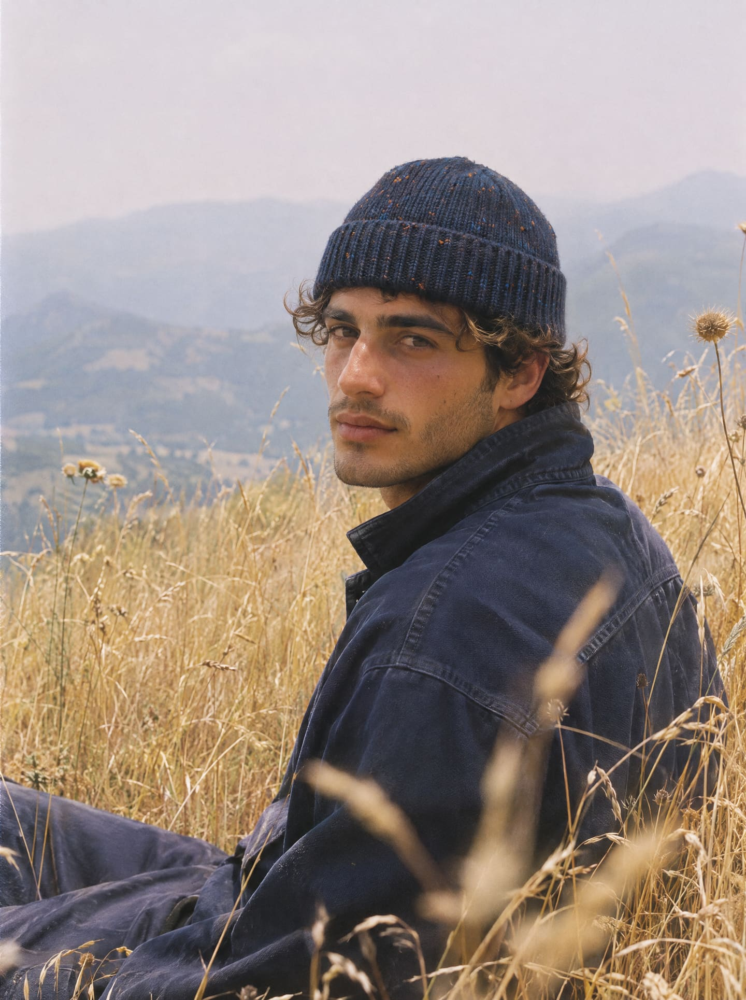
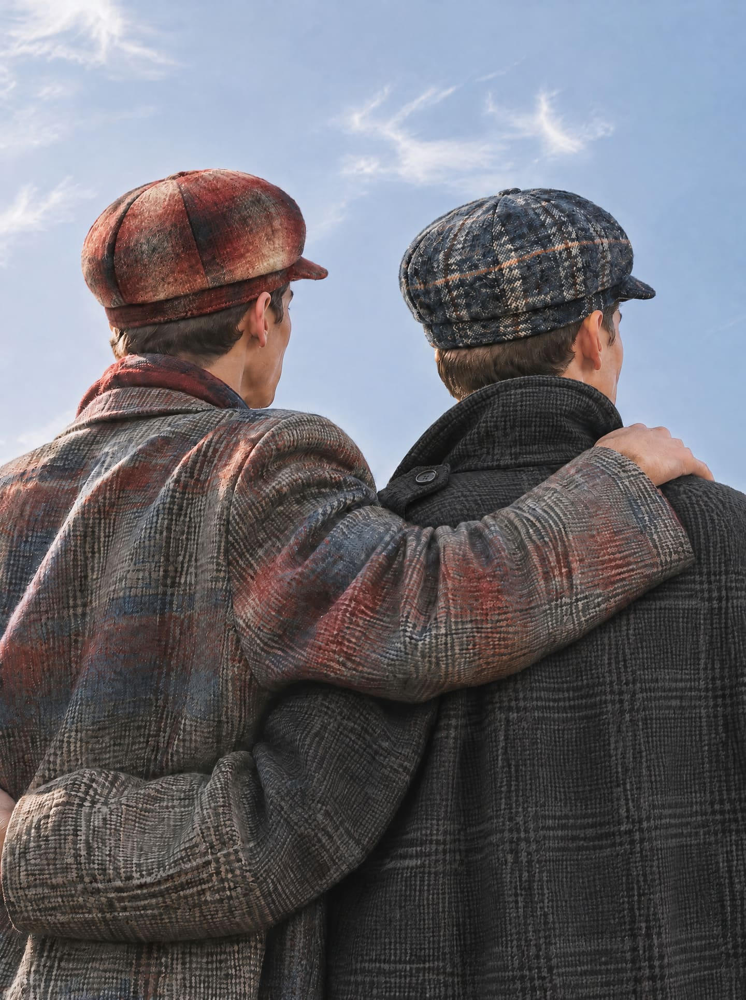

Uomo
COLLEZIONE AUTUNNO-INVERNO · FW27
Cappelli uomo Autunno-Inverno FW27




Cappelli e berretti fatti a mano in Italia dai maestri cappellai Marone. Collezione Autunno-Inverno FW27.
COLLEZIONE AUTUNNO-INVERNO · FW27


Cappelli e berretti fatti a mano in Italia dai maestri cappellai Marone. Collezione Autunno-Inverno FW27.